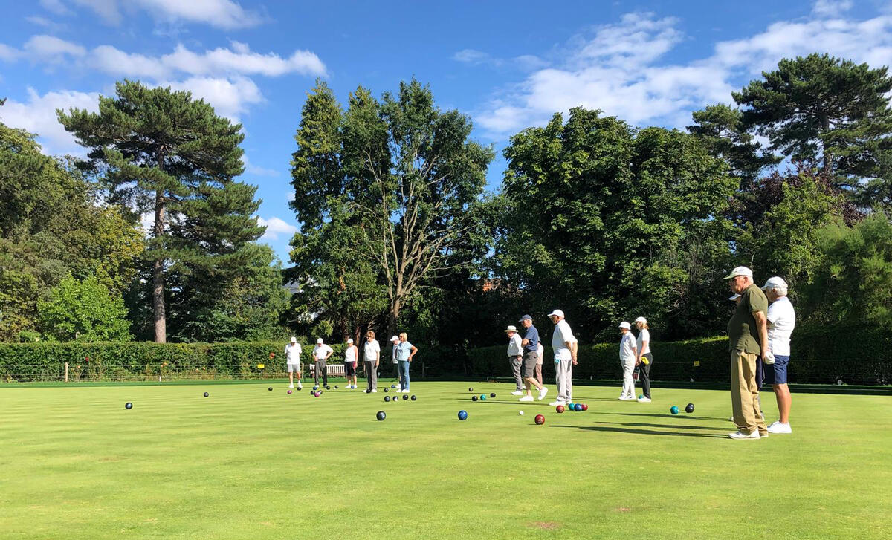

Ask for a taster
Fill in the club's expression of interest form and a member will arrange an hour on the green with you.
The friendly club in the park
A club run by its members, for its members — on the green beside the lake. You are welcome to call in and just watch a game, or book a free taster session and try it.

Trying it
Nobody is asked to commit to a season before they have stood on the green once.
Fill in the club's expression of interest form and a member will arrange an hour on the green with you.
That is the only thing you need to bring. The club provides the bowls — a set of four per person.
If you like it there is a membership form. No joining fee, and new members get three or four free one-hour coaching sessions.
Members on the club
Three of the club's own members, in their own words, from the club's website.
“I'd pondered about playing bowls for ages. I am now learning and enjoy a sporting activity that has me out in the fresh air with friendly, supportive people. I regret that I didn't join the club sooner.”
“When I retired, I wanted to find a local sporting activity and social group. The bowling club has been fantastic on both fronts: it certainly is 'a friendly place to be'.”
“I had never played bowls before, so I am delighted that, with some coaching and practice, I have now won my first competition! It was a great decision to join the club.”
The club is beside the lake and the ornamental fountain, next to Daisy's in the Park. Play runs from 11am to dusk on most days through the season.